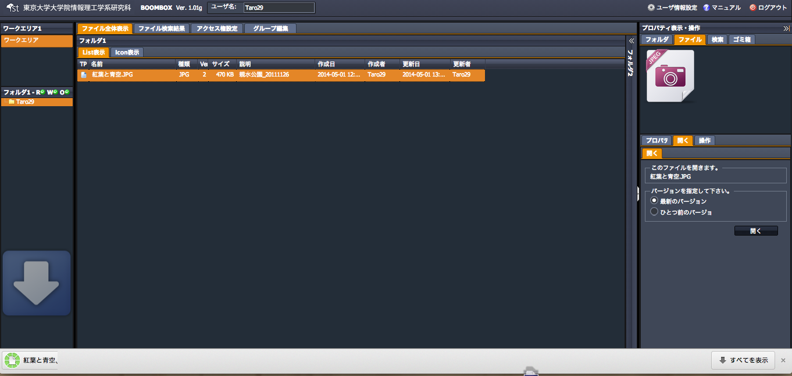
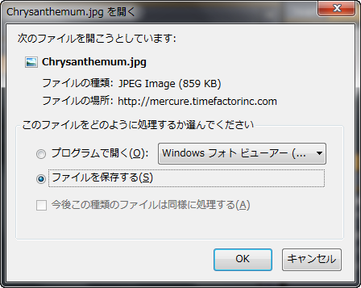
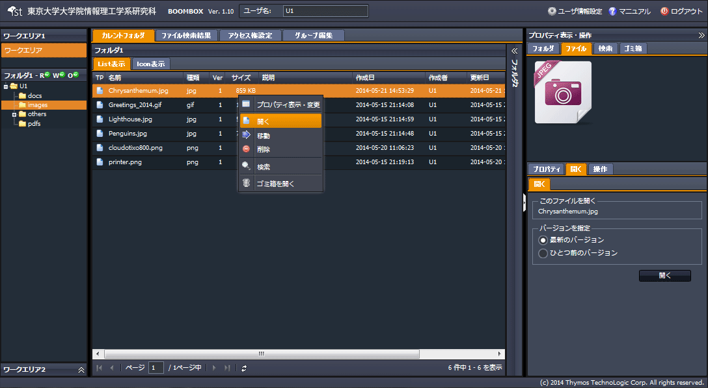
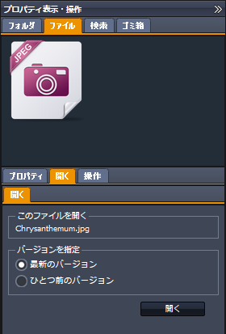

SecretFilesマニュアル
4.SecretFilesサービス(操作編)
4.2.4 ファイルのダウンロード
ファイルをダウンロードする手順を説明します。
(1) ファイルをダブルクリックすると、当該ファイルがダウンロードされ、ブラウザのダウンロードフォルダに格納されます。

ご使用のブラウザによっては、次のように、ダウンロードの方法を選択する画面が表示されることがあります。

＊バージョンを指定して開く
SecretFilesはファイルを世代管理（バージョン別に保存）していますので、ファイルのバージョンを指定してダウンロードする事ができます。
(2) 対象ファイルを選択し右クリックメニューを開く
『開く』をクリックします。

(3) 自動的に以下構成の右ペインが開く
右ペインにて、 【ファイルタブ】＋【開くタブ】が開きます。
この画面で最新か、一つ前のバージョンを指定してファイルをダウンロードすることができます。
